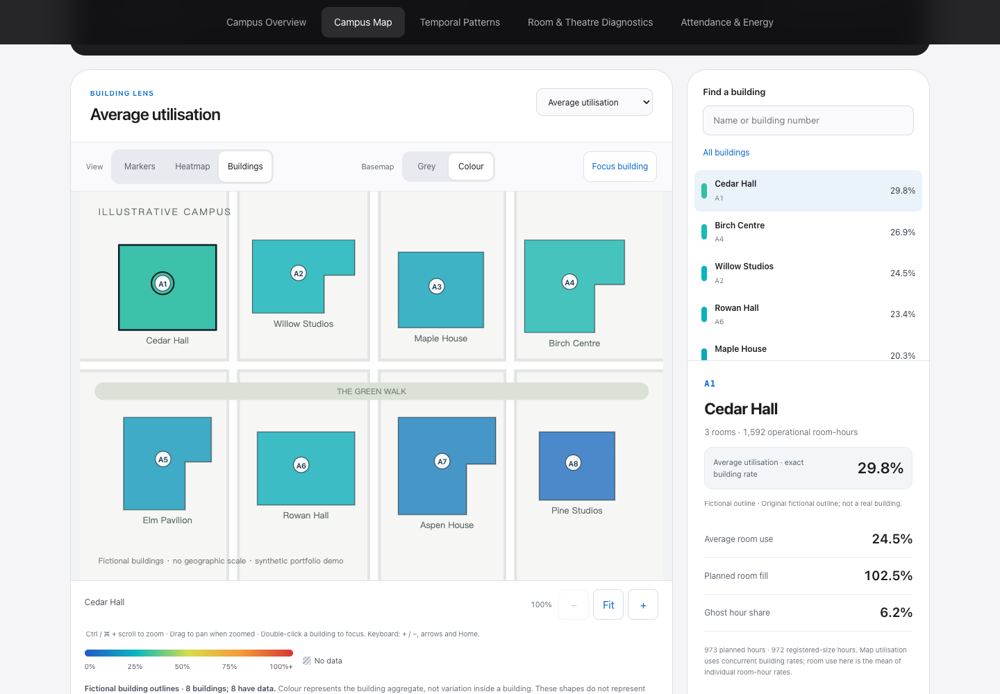

03 / CAMPUS SPACE ANALYTICS
教室很空，
是空间过大，还是到课人数少？
Campus Space Pulse 将教室容量、计划班级规模与人数记录分开比较，从校园地图下钻到具体教室，为排课与空间利用评估提供可复核的线索。
分析问题
“利用率低”本身不足以解释问题。一间 100 座教室安排 40 人，和安排 100 人却只记录到 40 人，虽然可能呈现相同的空间利用率，却需要不同的后续调查。
因此，看板将三个问题分开：哪些建筑和时间段较空？班级规模是否匹配教室容量？已排课时段的人数记录是否明显偏低？
我完成的工作
- 连接多来源信息
整理人数记录、排课计划与空间信息，建立 location code 到建筑和教室名称的映射，并结合教学周与关键日期，形成可筛选的分析维度。
- 区分容量、计划与实际记录
定义平均及最高利用率、计划填充率、容量与计划人数差、低人数已排课时段及异常读数；建筑指标先按同一小时合并房间人数与容量，避免直接平均房间百分比。
- 设计由整体到教室的探索路径
实现校园概览、交互地图、时段热力图、教室诊断及空座位时长视图，支持学期、教学周和空间类型筛选，以及建筑到教室的联动下钻。
- 让口径与限制可以被看见
在图表旁加入易读说明、计算示例与帮助面板；把大于 150% 的人数记录单独列为待核查异常，不把人数计数直接等同于学生出勤，也不将空座位时长表述为实际节能量。
交互演示

这不是学校真实数据的匿名化版本。记录、日期、教室名称与地图均重新构造，仅用于展示分析方法和交互；不支持对真实校园作出结论。
一分钟试用
- 在地图上选择 Cedar Hall
查看该建筑的计划填充率与房间列表，选择一个房间进入诊断。建筑选择只影响地图视图，进入房间后会同步相应筛选。
- 检查“Does the planned class fit the room?”
观察计划人数超过容量的示例。负的剩余座位表示计划班级过大，而不是负的实际座位数。
- 切换到 Temporal Patterns
比较建筑 × 星期与建筑 × 小时，注意色块代表最高小时利用率，不是平均值。点击问号可查看定义与限制。
实现与边界
使用 Python 整理和预聚合数据，以 HTML、CSS、JavaScript 和 SVG 构建静态交互页面，配合 GSAP 提供适度动画。公开演示通过 GitHub Pages 发布，不请求原始数据系统，也不使用第三方追踪。